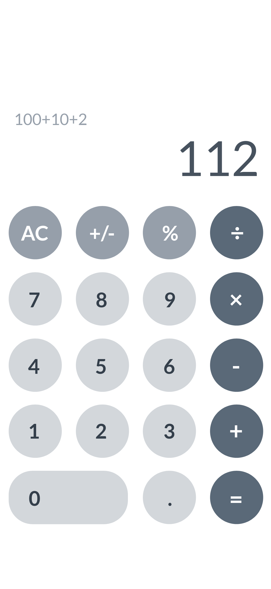
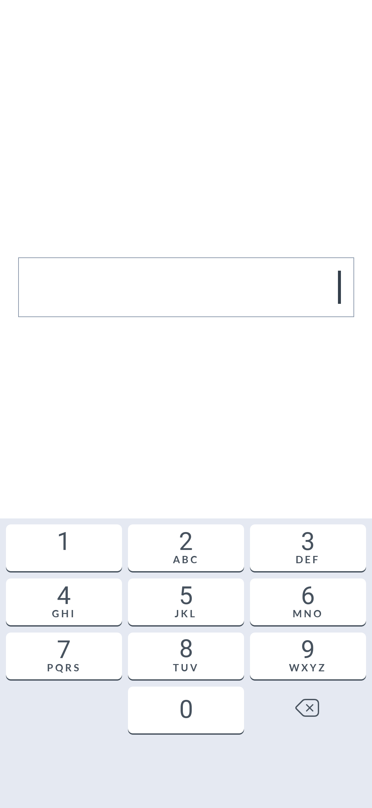

‘Calculator’ 태스크는 계산 과업, 숫자 입력 시 실수를 방지하고자 하는 경우, 그리고 숫자 입력 만을 허용하는 경우 사용하는 인터페이스로 단일 페이지로 구성된다.
활용 방법 →계산이 주요 과업인 애플리케이션의 경우 숫자 키패드와 계산에 필요한 다양한 기능들이 함께 노출된다.
금융 거래 애플리케이션의 경우 입/출금, 송금 시 금액을 입력할 수 있도록 숫자 키패드가 노출된다. 회원가입 등을 위해 전화번호와 같이 숫자 입력만을 허용하는 입력 필드가 있을 경우 해당 입력 필드 선택 시 숫자 키패드가 노출된다. 이때 입력된 숫자가 금액일 경우 일반 텍스트 입력과 달리 우측 정렬로 노출되어 사용자가 단위값 구분을 명확히 할 수 있도록 한다.
